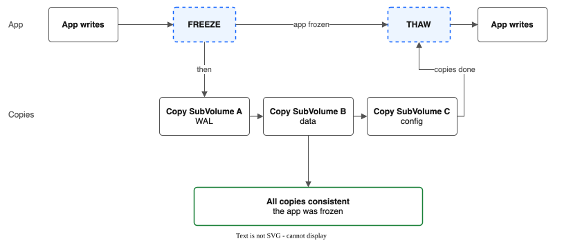
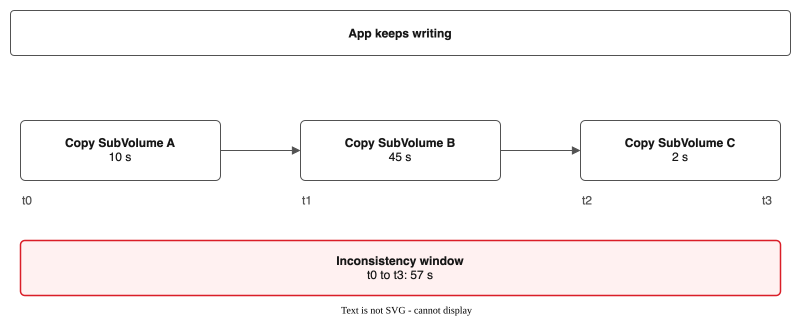
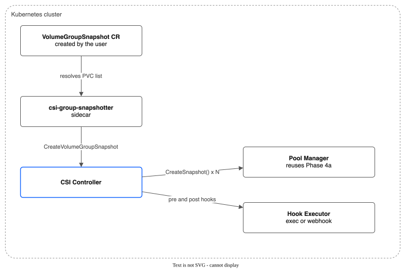
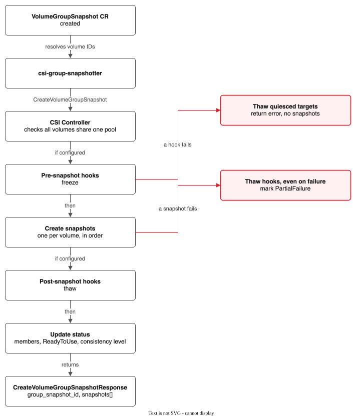
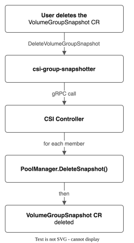
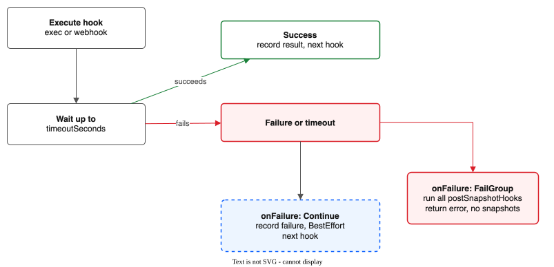
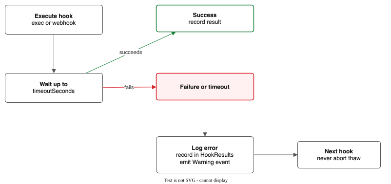
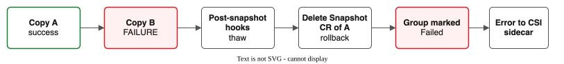

Volume Group Snapshots (Phase 4c)¶
Design document for coordinated multi-PVC snapshots within the IBM VPC File Pool CSI Driver.
Status: Not active. The code and the record type exist, but nothing acts on a VolumeGroupSnapshot (issue #100).
Depends on: Phase 4a (Volume Snapshots) -- must be complete
Kubernetes: 1.27+ (VolumeGroupSnapshot API, alpha)
Not active (issue #100). The driver does not act on
VolumeGroupSnapshotrecords: nothing watches them, the hooks below never run, and the CSI group snapshot service is not registered, so Kubernetes' own group snapshot API cannot reach the driver. There is no plan to turn it on. A running VM with several disks does not need it: its snapshots show one moment already (see KNOWN-LIMITATIONS.md). This page describes the design, not a working feature.Design note (not in effect): Quiesce hooks (
PreSnapshotHooks/PostSnapshotHooks) are defined in the VolumeGroupSnapshot CRD and implemented in Phase 5. Hooks support bothexec(pod command execution via Kubernetes exec API) andhttp(webhook callback) types, with configurableOnErrorpolicies (AbortorContinue). Hook execution results are recorded instatus.hookResults. Without hooks configured, the driver provides best-effort coordinated snapshots (sequential copy without application quiesce).
Overview¶
The Problem¶
Many real-world workloads use multiple PVCs that are logically related. A database might store data files in one PVC, write-ahead logs (WAL) in a second, and configuration in a third. A StatefulSet with per-replica PVCs needs coordinated backup across all replicas. When each PVC is snapshotted independently at different times, the resulting set of snapshots may represent an inconsistent state -- the WAL might reference transactions that are not yet reflected in the data snapshot, or vice versa.
Volume group snapshots address this by coordinating the snapshot of multiple PVCs so they represent a related point in time.
What This Is¶
A volume group snapshot creates individual Snapshot CRs for each member PVC in a group, coordinated through a single VolumeGroupSnapshot CRD that tracks group-level progress and consistency. It optionally invokes application quiesce/thaw hooks before and after the copy phase to achieve application-consistent snapshots.
What This Is Not¶
This is not an atomic multi-directory snapshot. NFS provides no mechanism to freeze multiple directories simultaneously. The best achievable consistency without application cooperation is "best-effort coordinated" -- copy all SubVolumes in rapid succession and hope for the best. With application cooperation (quiesce hooks), application-consistent snapshots are achievable.
Use Cases¶
| Workload | PVCs | Why Group Snapshot Matters |
|---|---|---|
| Database (data + WAL) | 2 PVCs | WAL must be consistent with data files |
| StatefulSet (3 replicas) | 3 PVCs | All replicas at the same logical point |
| Application (data + config + cache) | 3 PVCs | Config must match the data format version |
| ML training (model + checkpoints + logs) | 3 PVCs | Checkpoint must match training log state |
Consistency Model¶
This section is deliberately blunt about what the driver can and cannot guarantee.
NFS Constraints¶
- NFS has no atomic multi-directory snapshot mechanism.
- Each subdirectory must be copied individually using
cp -a/rsync(same as Phase 4a single snapshots). - NFS guarantees that individual file reads are consistent (you will not read a half-written file), but does not guarantee consistency across files being actively written.
- There is no filesystem freeze (
fsfreeze) available over NFS.
Consistency Levels¶
Consistency Level Mechanism Window of Inconsistency
---------------------------------------------------------------------------
Application-consistent Quiesce hooks + copy Zero (app freezes writes)
Best-effort coordinated Sequential copy, no Sum of all copy durations
quiesce (seconds to minutes)
Single-volume only Independent snapshots Unbounded (no coordination)
Best Case: With Quiesce Hooks¶

The application freezes writes before any copies begin and resumes after all copies complete. All snapshots represent the exact same application state. This is the only way to guarantee cross-PVC consistency.
Requirements: The application must expose a freeze/thaw mechanism (e.g., CHECKPOINT command, fsynclock, a custom endpoint). The operator must configure the quiesce hooks in the VolumeGroupSnapshot spec.
Default: No Quiesce (Best-Effort Coordinated)¶

SubVolumes are copied sequentially. The inconsistency window equals the time from the first copy starting to the last copy completing. During this window, the application continues writing. SubVolume A's snapshot is from time t0, but SubVolume C's snapshot is from time t2. If the application wrote data between t0 and t2 that created cross-PVC dependencies, those dependencies are broken in the snapshot set.
Individual file consistency: Each individual file within a SubVolume is NFS-consistent (you will not get a torn read). But relationships between files across SubVolumes -- and even between files within the same SubVolume that were being written during the copy -- may be inconsistent.
Worst Case: Large SubVolumes With Active Writers¶
For SubVolumes containing many gigabytes of actively-written data, the copy duration can stretch to minutes. The inconsistency window grows proportionally. Cross-SubVolume relationships are almost certainly broken. Even intra-SubVolume file relationships may be inconsistent if files were modified after they were already copied but before the copy of the entire directory completed.
VM Workloads¶
Volume group snapshots are NOT supported for VM workloads, for the same reason single snapshots are not supported: VM disk images (qcow2, raw) require block-level consistency that NFS file copies cannot provide. A copied VM disk image with active I/O will almost certainly have filesystem corruption. This applies regardless of whether quiesce hooks are used -- the VM's internal filesystem state within the disk image file is not guaranteed consistent by an NFS file copy.
Consistency Comparison¶
Single Snapshot Group Snapshot Group + Quiesce
(Phase 4a) (no hooks) (hooks)
---------------------------------------------------------------------------
Individual file NFS-consistent NFS-consistent NFS-consistent
consistency
Intra-PVC file NOT guaranteed NOT guaranteed Application-
relationships during active during active consistent
writes writes (app frozen)
Cross-PVC N/A (single PVC) NOT guaranteed Application-
relationships (time window) consistent
(app frozen)
VM disk images NOT supported NOT supported NOT supported
CSI Interface¶
The VolumeGroupSnapshot API¶
The Kubernetes VolumeGroupSnapshot API was introduced as alpha in Kubernetes 1.27 (KEP-3476). It consists of three CRDs managed by the csi-group-snapshotter sidecar:
VolumeGroupSnapshot ── user-facing, like VolumeSnapshot
VolumeGroupSnapshotContent ── driver-side, like VolumeSnapshotContent
VolumeGroupSnapshotClass ── policy, like VolumeSnapshotClass
The CSI driver implements two additional gRPC RPCs:
CreateVolumeGroupSnapshot(name, source_volume_ids[]) → group_snapshot_id, snapshots[]
DeleteVolumeGroupSnapshot(group_snapshot_id) → success
How It Differs From Single Snapshots¶
| Aspect | Single Snapshot (Phase 4a) | Group Snapshot (Phase 4c) |
|---|---|---|
| Input | One source volume ID | List of source volume IDs |
| Output | One snapshot | One group + N individual snapshots |
| Coordination | None needed | Must coordinate N copies |
| Consistency | Intra-PVC only | Cross-PVC (with hooks) |
| K8s API | VolumeSnapshot (GA) | VolumeGroupSnapshot (alpha) |
| CSI RPC | CreateSnapshot | CreateVolumeGroupSnapshot |
| Sidecar | csi-snapshotter | csi-group-snapshotter |
Alpha Status Implications¶
- Feature gate
CSIVolumeGroupSnapshotmust be enabled on the API server and kubelet. - The API may change in future Kubernetes releases.
- The
csi-group-snapshottersidecar is separate from the standardcsi-snapshotter. - Production use requires accepting the risk of API changes.
Controller Capability¶
The controller must advertise the CREATE_DELETE_VOLUME_GROUP_SNAPSHOT capability:
func (d *Driver) ControllerGetCapabilities(...) {
return &csi.ControllerGetCapabilitiesResponse{
Capabilities: []*csi.ControllerServiceCapability{
// ... existing capabilities ...
newControllerCap(csi.ControllerServiceCapability_RPC_CREATE_DELETE_VOLUME_GROUP_SNAPSHOT),
},
}, nil
}
Architecture¶
Component Interaction¶

- csi-group-snapshotter sidecar: resolves the PVC list from a label selector or an explicit list, then calls
CreateVolumeGroupSnapshotwith the name and the volume IDs. - CSI Controller:
- Parse the source volume IDs.
- Validate that all belong to the same pool.
- Execute the optional pre-snapshot hooks.
- Create the VolumeGroupSnapshot CR.
- For each source volume (in order):
PoolManager.CreateSnapshot(). - Execute the optional post-snapshot hooks.
- Update the VolumeGroupSnapshot status.
- Return the group snapshot and the member snapshots.
- Pool Manager:
CreateSnapshot()x N (reuses Phase 4a). - Hook Executor: pre and post hooks by exec or webhook, with timeout enforcement.
Data Flow: CreateVolumeGroupSnapshot¶

- The user creates a VolumeGroupSnapshot CR (it references a VolumeGroupSnapshotClass and the PVCs by label selector or list).
- The
csi-group-snapshottersidecar resolves the PVCs to CSI volume IDs. - It calls the
CreateVolumeGroupSnapshotgRPC withgroup_snapshot_name,source_volume_ids: [vol-1, vol-2, vol-3]andparameters(from the VolumeGroupSnapshotClass). - The CSI Controller receives the call:
- 4a. Parse all volume IDs and extract the pool names.
- 4b. Validate that all volumes belong to the same pool (cross-pool group snapshots are not supported).
- 4c. Fetch the VolumeGroupSnapshot parameters (hook config, ordering).
- Pre-snapshot hooks (if configured):
- 5a. For each hook target pod, execute the quiesce command (exec into the pod or call a webhook).
- 5b. Wait for all hooks to succeed (with timeout).
- 5c. If any hook fails, execute the thaw hooks for the targets already quiesced, and return an error (no snapshots taken).
- Create the individual snapshots (reuses the Phase 4a infrastructure):
- 6a. Create the VolumeGroupSnapshot CR (status: Creating).
- 6b. For each source volume (in the configured order): call
PoolManager.CreateSnapshot()and record the individual Snapshot CR name in the group status. If a snapshot fails, execute the thaw hooks (even on failure), mark the group as PartialFailure, and continue or abort (per policy). - Post-snapshot hooks (if configured):
- 7a. Execute the thaw commands on all hook target pods.
- 7b. Log but do not fail if a thaw hook errors (the snapshots are already taken, so thaw is best-effort).
- Update the VolumeGroupSnapshot CR status:
- Members:
[snap-1, snap-2, snap-3] - ReadyToUse: true (if all members are ready)
- ConsistencyLevel:
"ApplicationConsistent"or"BestEffort" - Return
CreateVolumeGroupSnapshotResponsewithgroup_snapshot_idandsnapshots[](the individual snapshot details).
Data Flow: DeleteVolumeGroupSnapshot¶

- The user deletes the VolumeGroupSnapshot CR.
csi-group-snapshottercalls theDeleteVolumeGroupSnapshotgRPC.- The CSI Controller receives the call:
- 3a. Fetch the VolumeGroupSnapshot CR.
- 3b. For each member snapshot, call
PoolManager.DeleteSnapshot(). - 3c. Delete the VolumeGroupSnapshot CR.
- Return success.
CRD Design¶
VolumeGroupSnapshot¶
Cluster-scoped CRD that tracks a coordinated group of snapshots.
// api/v1alpha1/volumegroupsnapshot_types.go
package v1alpha1
import (
metav1 "k8s.io/apimachinery/pkg/apis/meta/v1"
)
// +kubebuilder:object:root=true
// +kubebuilder:subresource:status
// +kubebuilder:resource:scope=Cluster,shortName=vgs
// +kubebuilder:printcolumn:name="Pool",type=string,JSONPath=`.spec.poolName`
// +kubebuilder:printcolumn:name="Members",type=integer,JSONPath=`.status.memberCount`
// +kubebuilder:printcolumn:name="Ready",type=integer,JSONPath=`.status.readyCount`
// +kubebuilder:printcolumn:name="Consistency",type=string,JSONPath=`.status.consistencyLevel`
// +kubebuilder:printcolumn:name="Phase",type=string,JSONPath=`.status.phase`
// VolumeGroupSnapshot tracks a coordinated group of SubVolume snapshots.
type VolumeGroupSnapshot struct {
metav1.TypeMeta `json:",inline"`
metav1.ObjectMeta `json:"metadata,omitempty"`
Spec VolumeGroupSnapshotSpec `json:"spec,omitempty"`
Status VolumeGroupSnapshotStatus `json:"status,omitempty"`
}
type VolumeGroupSnapshotSpec struct {
// PoolName references the FileSharePool containing the source volumes.
// All source volumes must belong to this pool.
// +kubebuilder:validation:Required
PoolName string `json:"poolName"`
// SourcePVCs lists the PVC names to include in the group snapshot.
// Mutually exclusive with SourceSelector.
// +optional
SourcePVCs []GroupSnapshotSource `json:"sourcePVCs,omitempty"`
// SourceSelector selects PVCs by label. All matching PVCs that are backed
// by SubVolumes in the named pool will be included.
// Mutually exclusive with SourcePVCs.
// +optional
SourceSelector *metav1.LabelSelector `json:"sourceSelector,omitempty"`
// CopyOrder defines the order in which SubVolumes are copied.
// If empty, copies are executed in the order the source volumes are listed
// (or alphabetical for selector-based sources).
// +optional
CopyOrder []string `json:"copyOrder,omitempty"`
// PreSnapshotHooks defines commands to execute before snapshotting.
// Used to quiesce (freeze) the application for consistency.
// +optional
PreSnapshotHooks []SnapshotHook `json:"preSnapshotHooks,omitempty"`
// PostSnapshotHooks defines commands to execute after snapshotting.
// Used to thaw (unfreeze) the application.
// +optional
PostSnapshotHooks []SnapshotHook `json:"postSnapshotHooks,omitempty"`
// FailurePolicy controls behavior when a member snapshot fails.
// "Abort" stops immediately and rolls back completed snapshots.
// "Continue" finishes remaining members and marks the group as PartialFailure.
// +kubebuilder:validation:Enum=Abort;Continue
// +kubebuilder:default=Abort
FailurePolicy string `json:"failurePolicy"`
}
// GroupSnapshotSource identifies a PVC to include in the group snapshot.
type GroupSnapshotSource struct {
// PVCName is the name of the PersistentVolumeClaim.
// +kubebuilder:validation:Required
PVCName string `json:"pvcName"`
// PVCNamespace is the namespace of the PersistentVolumeClaim.
// +kubebuilder:validation:Required
PVCNamespace string `json:"pvcNamespace"`
}
// SnapshotHook defines a pre- or post-snapshot action.
type SnapshotHook struct {
// Name is a human-readable identifier for this hook (used in logs and status).
// +kubebuilder:validation:Required
Name string `json:"name"`
// Type is the hook execution mechanism.
// +kubebuilder:validation:Enum=Exec;Webhook
// +kubebuilder:validation:Required
Type string `json:"type"`
// Exec defines a command to run inside a pod container.
// Required when Type is "Exec".
// +optional
Exec *ExecHook `json:"exec,omitempty"`
// Webhook defines an HTTP endpoint to call.
// Required when Type is "Webhook".
// +optional
Webhook *WebhookHook `json:"webhook,omitempty"`
// TimeoutSeconds is the maximum time to wait for the hook to complete.
// If the hook does not complete within this time, it is considered failed.
// +kubebuilder:validation:Minimum=1
// +kubebuilder:validation:Maximum=300
// +kubebuilder:default=30
TimeoutSeconds int32 `json:"timeoutSeconds"`
// OnFailure controls what happens when this hook fails.
// "FailGroup" aborts the entire group snapshot.
// "Continue" logs the failure and proceeds (consistency is degraded).
// +kubebuilder:validation:Enum=FailGroup;Continue
// +kubebuilder:default=FailGroup
OnFailure string `json:"onFailure"`
}
// ExecHook runs a command inside a container.
type ExecHook struct {
// PodName is the name of the pod to exec into.
// +kubebuilder:validation:Required
PodName string `json:"podName"`
// PodNamespace is the namespace of the pod.
// +kubebuilder:validation:Required
PodNamespace string `json:"podNamespace"`
// Container is the container name within the pod. If empty, the first
// container is used.
// +optional
Container string `json:"container,omitempty"`
// Command is the command to execute (e.g., ["pg_ctl", "stop", "-m", "fast"]).
// +kubebuilder:validation:MinItems=1
Command []string `json:"command"`
}
// WebhookHook calls an HTTP endpoint.
type WebhookHook struct {
// URL is the HTTP(S) endpoint to call.
// +kubebuilder:validation:Required
// +kubebuilder:validation:Pattern=`^https?://`
URL string `json:"url"`
// Method is the HTTP method. Defaults to POST.
// +kubebuilder:validation:Enum=GET;POST;PUT
// +kubebuilder:default=POST
Method string `json:"method"`
// Headers are additional HTTP headers to include.
// +optional
Headers map[string]string `json:"headers,omitempty"`
// Body is an optional request body (JSON).
// +optional
Body string `json:"body,omitempty"`
// ExpectedStatusCodes are the HTTP status codes that indicate success.
// Defaults to [200].
// +optional
ExpectedStatusCodes []int `json:"expectedStatusCodes,omitempty"`
}
type VolumeGroupSnapshotStatus struct {
// Phase is the group snapshot lifecycle state.
// +kubebuilder:validation:Enum=Creating;Ready;PartialFailure;Failed;Deleting
Phase string `json:"phase,omitempty"`
// Members lists the individual snapshots in this group.
Members []GroupSnapshotMember `json:"members,omitempty"`
// MemberCount is the total number of member snapshots.
MemberCount int32 `json:"memberCount"`
// ReadyCount is the number of member snapshots that are ready.
ReadyCount int32 `json:"readyCount"`
// FailedCount is the number of member snapshots that failed.
FailedCount int32 `json:"failedCount"`
// ConsistencyLevel reports the actual consistency achieved.
// +kubebuilder:validation:Enum=ApplicationConsistent;BestEffort;Unknown
ConsistencyLevel string `json:"consistencyLevel,omitempty"`
// CopyStartTime is when the first member copy began.
// +optional
CopyStartTime *metav1.Time `json:"copyStartTime,omitempty"`
// CopyEndTime is when the last member copy completed.
// +optional
CopyEndTime *metav1.Time `json:"copyEndTime,omitempty"`
// InconsistencyWindowSeconds is the duration between the first and last copy.
// Zero when quiesce hooks are used and all succeed.
// +optional
InconsistencyWindowSeconds *int64 `json:"inconsistencyWindowSeconds,omitempty"`
// HookResults records the outcome of pre/post snapshot hooks.
// +optional
HookResults []HookResult `json:"hookResults,omitempty"`
// CreationTime is when the group snapshot was initiated.
// +optional
CreationTime *metav1.Time `json:"creationTime,omitempty"`
// Conditions follows the standard Kubernetes conditions pattern.
// +optional
Conditions []metav1.Condition `json:"conditions,omitempty"`
}
// GroupSnapshotMember tracks the status of a single snapshot within the group.
type GroupSnapshotMember struct {
// SourcePVCName is the PVC name this snapshot was taken from.
SourcePVCName string `json:"sourcePVCName"`
// SourcePVCNamespace is the namespace of the source PVC.
SourcePVCNamespace string `json:"sourcePVCNamespace"`
// SnapshotName is the name of the individual Snapshot CR.
SnapshotName string `json:"snapshotName"`
// SourceVolumeID is the CSI volume ID of the source.
SourceVolumeID string `json:"sourceVolumeID"`
// Phase is the individual snapshot state.
// +kubebuilder:validation:Enum=Pending;Creating;Ready;Failed
Phase string `json:"phase"`
// CopyStartTime is when this member's copy started.
// +optional
CopyStartTime *metav1.Time `json:"copyStartTime,omitempty"`
// CopyEndTime is when this member's copy completed.
// +optional
CopyEndTime *metav1.Time `json:"copyEndTime,omitempty"`
// Error contains the error message if this member failed.
// +optional
Error string `json:"error,omitempty"`
}
// HookResult records the outcome of a single hook execution.
type HookResult struct {
// Name is the hook name (from spec).
Name string `json:"name"`
// Phase is "Pre" or "Post".
Phase string `json:"phase"`
// Success indicates whether the hook completed successfully.
Success bool `json:"success"`
// DurationSeconds is how long the hook took.
DurationSeconds int32 `json:"durationSeconds"`
// Error contains the error message if the hook failed.
// +optional
Error string `json:"error,omitempty"`
}
Example VolumeGroupSnapshot CR (Label Selector)¶
apiVersion: storage.ibmcloud.io/v1alpha1
kind: VolumeGroupSnapshot
metadata:
name: myapp-group-snap-20260216
spec:
poolName: general-purpose
sourceSelector:
matchLabels:
app: myapp
component: database
copyOrder:
- myapp-wal # WAL first (most recent state)
- myapp-data # Data second
- myapp-config # Config last (least volatile)
preSnapshotHooks:
- name: freeze-database
type: Exec
exec:
podName: myapp-db-0
podNamespace: production
container: postgres
command: ["psql", "-c", "SELECT pg_start_backup('group-snap');"]
timeoutSeconds: 10
onFailure: FailGroup
postSnapshotHooks:
- name: thaw-database
type: Exec
exec:
podName: myapp-db-0
podNamespace: production
container: postgres
command: ["psql", "-c", "SELECT pg_stop_backup();"]
timeoutSeconds: 10
onFailure: Continue # Always thaw, even if logging fails
failurePolicy: Abort
Example VolumeGroupSnapshot CR (Explicit PVC List)¶
apiVersion: storage.ibmcloud.io/v1alpha1
kind: VolumeGroupSnapshot
metadata:
name: statefulset-snap-20260216
spec:
poolName: general-purpose
sourcePVCs:
- pvcName: data-myapp-0
pvcNamespace: production
- pvcName: data-myapp-1
pvcNamespace: production
- pvcName: data-myapp-2
pvcNamespace: production
failurePolicy: Continue # Snapshot as many replicas as possible
Example VolumeGroupSnapshot CR (Webhook Hooks)¶
apiVersion: storage.ibmcloud.io/v1alpha1
kind: VolumeGroupSnapshot
metadata:
name: webhook-group-snap-20260216
spec:
poolName: general-purpose
sourceSelector:
matchLabels:
app: myapp
preSnapshotHooks:
- name: quiesce-via-api
type: Webhook
webhook:
url: "https://myapp.production.svc:8443/api/v1/quiesce"
method: POST
headers:
Authorization: "Bearer ${HOOK_TOKEN}"
expectedStatusCodes: [200, 204]
timeoutSeconds: 15
onFailure: FailGroup
postSnapshotHooks:
- name: thaw-via-api
type: Webhook
webhook:
url: "https://myapp.production.svc:8443/api/v1/thaw"
method: POST
headers:
Authorization: "Bearer ${HOOK_TOKEN}"
timeoutSeconds: 15
onFailure: Continue
failurePolicy: Abort
Labels Convention¶
All VolumeGroupSnapshot CRs should have:
Individual Snapshot CRs created as part of a group should also have:
This allows efficient queries for all snapshots belonging to a group.
Quiesce Hook Design¶
Why Hooks Are Needed¶
Without application cooperation, there is no way to guarantee cross-PVC consistency. The driver copies SubVolumes sequentially over NFS, which takes seconds to minutes depending on data size. The application continues writing during this window.
Quiesce hooks give the application a chance to: 1. Flush all in-flight writes to disk. 2. Freeze writes (or checkpoint to a consistent state). 3. Signal readiness for snapshot.
After all copies complete, thaw hooks resume normal operation.
Exec Hooks¶
The driver uses the Kubernetes exec API to run commands inside pod containers, the same mechanism as kubectl exec.
Sequence:
1. Controller resolves pod/container from hook spec
2. Opens exec stream to kubelet via K8s API
3. Runs command with timeout
4. Captures stdout/stderr
5. Checks exit code (0 = success)
6. Records result in VolumeGroupSnapshot status
RBAC requirement: The controller ServiceAccount must have pods/exec permission in the target namespaces:
Security consideration: Exec hooks allow the CSI controller to run arbitrary commands in any pod it has RBAC access to. This is a powerful capability. Cluster administrators should: - Restrict which namespaces the controller ServiceAccount can exec into. - Review hook commands in VolumeGroupSnapshot specs via admission webhooks. - Log all hook executions for audit purposes.
Webhook Hooks¶
The driver makes HTTP requests to user-specified endpoints.
Sequence:
1. Controller builds HTTP request from hook spec
2. Sends request with configured timeout
3. Checks response status code against expectedStatusCodes
4. Records result in VolumeGroupSnapshot status
Advantages over exec:
- No pods/exec RBAC needed.
- Application can implement complex quiesce logic behind the endpoint.
- Works with services outside the cluster (e.g., external database management API).
Disadvantages: - Requires the application to expose an HTTP quiesce endpoint. - Network connectivity from the controller pod to the webhook target must be available. - TLS certificate management for HTTPS endpoints.
Timeout and Failure Handling¶

For each hook in preSnapshotHooks: execute the hook (exec or webhook) and wait up to timeoutSeconds.
- Success: record the result and continue to the next hook.
- Failure or timeout,
onFailure == "FailGroup": execute ALLpostSnapshotHooks(thaw everything quiesced so far) and return an error (no snapshots taken). - Failure or timeout,
onFailure == "Continue": record the failure, setconsistencyLevel = "BestEffort", and continue to the next hook.
When all hooks are done, the controller proceeds to the snapshot copies.
Critical safety rule: Post-snapshot (thaw) hooks are ALWAYS executed if any pre-snapshot (quiesce) hook succeeded, regardless of whether the snapshot copies succeed or fail. An application left in a frozen state is worse than a failed snapshot. Thaw hook failures are logged but never cause the group snapshot operation to fail.

For each hook in postSnapshotHooks: execute the hook (exec or webhook) and wait up to timeoutSeconds.
- Success: record the result.
- Failure or timeout: log the error at
klog.ErrorSlevel, record the failure inHookResults, emit a Kubernetes Warning event, and continue to the next hook (NEVER abort thaw).
Hook Execution Order¶
Pre-snapshot hooks execute in the order listed in the spec (first to last). Post-snapshot hooks also execute in spec order. If the operator wants thaw hooks to execute in reverse order of freeze hooks, they must list them that way in the spec.
Ordering and Coordination¶
Why Copy Order Matters¶
For some workloads, the order of subdirectory copies affects the consistency of the resulting snapshot set.
Example: Database with WAL and Data volumes
If the WAL is copied before the data: - The WAL snapshot contains the most recent transactions. - The data snapshot may be slightly behind. - Recovery: replay WAL from the snapshot forward -- safe, this is normal database recovery.
If the data is copied before the WAL: - The data snapshot may contain transactions whose WAL records have not yet been copied. - The WAL snapshot (taken later) contains additional transactions. - Recovery: the data is ahead of the WAL -- potential inconsistency.
Recommendation: Copy the most volatile, log-like volume first (WAL, journal, transaction log), then the data volume.
CopyOrder Field¶
The copyOrder field in the spec allows explicit control:
spec:
copyOrder:
- myapp-wal # PVC name -- copied first
- myapp-data # Copied second
- myapp-config # Copied last
If copyOrder is empty:
- For sourcePVCs: copy in the order listed.
- For sourceSelector: copy in alphabetical order by PVC name (deterministic but arbitrary).
Parallel vs Sequential Copy¶
The current design copies SubVolumes sequentially to minimize NFS server load and to support meaningful copy ordering. Parallel copies would reduce the total time but:
- Eliminate ordering guarantees.
- Increase NFS server load (multiple concurrent cp -a operations).
- Make the inconsistency window harder to reason about.
A future enhancement could add a copyStrategy: Parallel option for workloads that do not need ordering (e.g., independent StatefulSet replicas that are already application-consistent via their own replication protocol).
Error Handling¶
Partial Group Failure¶
When a member snapshot fails, the behavior depends on failurePolicy:
Abort (default):

Copy SubVolume A succeeds (Snapshot CR created). Copy SubVolume B fails. Then the controller:
- Executes the post-snapshot hooks (thaw).
- Deletes the Snapshot CR for SubVolume A (rollback).
- Marks the VolumeGroupSnapshot as Failed.
- Returns an error to the CSI sidecar.
Continue:
Copy SubVolume A succeeds (Snapshot CR created). Copy SubVolume B fails (logged, skipped). Copy SubVolume C succeeds (Snapshot CR created). Then the controller:
- Executes the post-snapshot hooks (thaw).
- Marks the VolumeGroupSnapshot as PartialFailure.
- Sets Members to
[A: Ready, B: Failed, C: Ready]. - Returns success with partial results.
Rollback on Abort¶
When failurePolicy: Abort triggers a rollback:
- Stop creating new snapshots.
- Execute post-snapshot hooks (thaw) immediately.
- Delete all Snapshot CRs created so far in this group.
- Delete snapshot directories on the NFS share.
- Delete the VolumeGroupSnapshot CR (or mark as Failed with error details).
Rollback is best-effort. If a Snapshot CR deletion fails, it is logged and the next member is attempted. Orphaned snapshot directories can be cleaned up by the pool reconciler.
Hook Failure During Snapshot¶
If a pre-snapshot hook fails and onFailure: FailGroup:
- No snapshots are taken.
- Post-snapshot hooks are executed for all already-quiesced targets.
- VolumeGroupSnapshot is marked Failed with the hook error.
If a post-snapshot hook fails:
- Snapshots are already taken and are not rolled back.
- The failure is logged and recorded in
HookResults. - A Kubernetes Warning event is emitted.
- The operator must manually investigate why the application did not thaw.
Idempotency¶
CreateVolumeGroupSnapshot must be idempotent. If a VolumeGroupSnapshot CR with the same name already exists and all member snapshots are present:
- Return the existing group snapshot without re-executing hooks or copies.
- Compare the source volume list to ensure it matches the existing group.
If the group exists but is in a Failed or PartialFailure state, the caller must delete it before retrying.
Pool Manager Interface Extension¶
New Methods¶
// GroupSnapshotRequest contains the parameters for a group snapshot.
type GroupSnapshotRequest struct {
GroupName string
PoolName string
SourceVolumeIDs []string
CopyOrder []string // PVC names in desired copy order
Parameters map[string]string
}
// GroupSnapshotResult contains the result of a group snapshot.
type GroupSnapshotResult struct {
GroupName string
PoolName string
Members []SnapshotResult
CreationTime time.Time
ReadyToUse bool
}
// PoolManager interface additions:
type PoolManager interface {
// ... existing methods from Phase 4a ...
// CreateGroupSnapshot creates snapshots for multiple SubVolumes in sequence.
// Does NOT execute hooks -- the CSI controller handles hook orchestration.
CreateGroupSnapshot(ctx context.Context, req GroupSnapshotRequest) (*GroupSnapshotResult, error)
// DeleteGroupSnapshot deletes all member snapshots and the group CR.
DeleteGroupSnapshot(ctx context.Context, groupName string) error
}
The pool manager handles only the data plane (creating/deleting snapshot directories and CRs). Hook orchestration is the responsibility of the CSI controller, which has access to the Kubernetes API for pod exec and HTTP for webhooks.
Metrics¶
New Prometheus Metrics¶
| Metric | Type | Labels | Description |
|---|---|---|---|
pool_csi_group_snapshots_total |
Counter | pool, status | Group snapshot operations |
pool_csi_group_snapshot_duration_seconds |
Histogram | pool | Total group snapshot duration (including hooks) |
pool_csi_group_snapshot_copy_duration_seconds |
Histogram | pool | Copy phase duration only |
pool_csi_group_snapshot_member_count |
Histogram | pool | Number of members per group snapshot |
pool_csi_group_snapshot_inconsistency_window_seconds |
Histogram | pool | Time between first and last copy |
pool_csi_hook_duration_seconds |
Histogram | pool, hook_name, phase | Per-hook execution time |
pool_csi_hook_failures_total |
Counter | pool, hook_name, phase | Hook failure count |
Alerts¶
# Alert: Group snapshot inconsistency window too large
- alert: GroupSnapshotInconsistencyWindowHigh
expr: pool_csi_group_snapshot_inconsistency_window_seconds > 60
for: 0s
labels:
severity: warning
annotations:
summary: "Group snapshot inconsistency window exceeds 60 seconds"
description: "Consider using quiesce hooks or reducing SubVolume sizes."
# Alert: Hook failure
- alert: SnapshotHookFailed
expr: rate(pool_csi_hook_failures_total[5m]) > 0
for: 0s
labels:
severity: critical
annotations:
summary: "Snapshot hook failed"
description: "A pre/post snapshot hook failed. Check application state."
Dependencies¶
Hard Dependencies¶
-
Phase 4a (Volume Snapshots): Must be fully implemented and tested. Group snapshots reuse the single-snapshot infrastructure (
PoolManager.CreateSnapshot,SnapshotCRD, snapshot directory management). -
Kubernetes 1.27+: The VolumeGroupSnapshot API was introduced as alpha in 1.27. The
CSIVolumeGroupSnapshotfeature gate must be enabled. -
csi-group-snapshotter sidecar: A separate sidecar from the standard
csi-snapshotter. Must be deployed alongside the CSI controller.
Soft Dependencies¶
-
Application quiesce support: Optional but required for application-consistent snapshots. Without it, only best-effort coordinated snapshots are possible.
-
RBAC for pod exec: Only needed if exec hooks are configured. Not required for webhook hooks or no-hook operation.
Version Requirements¶
| Component | Minimum Version | Notes |
|---|---|---|
| Kubernetes | 1.27 | VolumeGroupSnapshot alpha |
| CSI spec | 1.8.0 | CreateVolumeGroupSnapshot RPC |
| csi-group-snapshotter | v0.1.0+ | Alpha sidecar |
| This driver (Phase 4a) | Complete | Single snapshot infrastructure |
Testing Strategy¶
Unit Tests¶
| Test | Coverage Target | Description |
|---|---|---|
TestGroupSnapshot_AllMembers |
Core | All source volumes snapshotted, group status reflects Ready |
TestGroupSnapshot_Idempotent |
Core | Re-calling with same name returns existing group |
TestGroupSnapshot_PartialFailure_Abort |
Core | One member fails, all completed snapshots rolled back |
TestGroupSnapshot_PartialFailure_Continue |
Core | One member fails, remaining members completed |
TestGroupSnapshot_CopyOrder |
Core | Members copied in specified order |
TestGroupSnapshot_DefaultOrder |
Core | Without copyOrder, uses PVC list order / alphabetical |
TestGroupSnapshot_PreHookFailure |
Hooks | Pre-hook fails, no snapshots taken, thaw hooks run |
TestGroupSnapshot_PostHookFailure |
Hooks | Post-hook fails, snapshots retained, failure logged |
TestGroupSnapshot_HookTimeout |
Hooks | Hook exceeds timeout, treated as failure |
TestGroupSnapshot_ThawAlwaysRuns |
Hooks | Thaw hooks execute even when copy fails |
TestGroupSnapshot_CrossPoolRejected |
Validation | Sources from different pools return error |
TestGroupSnapshot_EmptySourceList |
Validation | Empty source list returns error |
TestGroupSnapshot_Delete |
Core | All member snapshots and group CR deleted |
TestGroupSnapshot_DeletePartial |
Edge case | Delete group with some members already gone |
Coverage target: 85% for pkg/pool/ group snapshot code, 75% for pkg/driver/ group snapshot handlers.
Integration Tests¶
Use fake K8s client, fake VPC client, and fake NFS operations:
- Full lifecycle: Create group snapshot with 3 members, verify all CRs created, delete group, verify all CRs removed.
- Hook simulation: Inject fake exec results, verify hook ordering and failure handling.
- Concurrent access: Multiple group snapshots on the same pool, verify serialization via mutex.
E2E Tests¶
Require a live ROKS or ROVS cluster with Kubernetes 1.27+ and the CSIVolumeGroupSnapshot feature gate enabled:
- Basic group snapshot: Create 3 PVCs, write data to each, create group snapshot, verify all snapshot directories contain correct data.
- Group restore: Create group snapshot, delete original PVCs, restore from group snapshot, verify data integrity.
- Exec hook integration: Deploy a test application with a
/freezeendpoint, configure exec hooks, verify application is frozen during copy window. - Failure recovery: Kill a snapshot midway, verify rollback or partial failure handling.
Consistency Verification Tests¶
These tests specifically validate the consistency model claims:
- Active writer during copy: Start a writer that updates a sequence number across 2 PVCs. Take a group snapshot without hooks. Verify that the sequence numbers in the two snapshot PVCs may differ (proving the inconsistency window exists).
- Active writer with hooks: Same test but with quiesce hooks that stop the writer. Verify sequence numbers match across both snapshot PVCs.
Comparison With Alternatives¶
Why Not Just Snapshot Individually?¶
Individual snapshots taken at different times have an unbounded inconsistency window. The operator might trigger snapshot A at 10:00:00, and snapshot B at 10:00:05, but there is no coordination or tracking of the time relationship between them.
Group snapshots provide: - Coordinated timing: All copies happen in rapid succession within a single operation. - Tracked inconsistency window: The exact duration between first and last copy is recorded. - Optional quiesce hooks: The only path to application-consistent multi-PVC snapshots. - Atomic rollback: If one member fails, all can be rolled back (with Abort policy). - Single restore point: Restore the entire group to a coordinated state.
Why Not Use Application-Level Backup?¶
Application-level backup tools (Velero, Kasten, custom rsync scripts) can achieve similar results. The advantages of CSI-native group snapshots are:
- Standard API: Works with any Kubernetes backup tool that supports VolumeGroupSnapshot.
- No application-specific tooling: The same mechanism works for any workload.
- Integrated lifecycle: Snapshot creation, retention, and deletion managed by Kubernetes.
- Storage-aware: Snapshots stay on the same NFS share, avoiding network transfer overhead.
The disadvantage is the consistency limitations described in this document. Application-level tools that understand the application's data format can achieve stronger consistency guarantees.
Why Not Block-Level Snapshots?¶
VPC file shares do not support block-level or filesystem-level snapshots. If IBM Cloud adds native file share snapshot support in the future, this driver should adopt it -- native snapshots would be atomic, instantaneous, and space-efficient (copy-on-write). The directory-copy approach documented here is the best available option given current VPC capabilities.
Limitations Summary¶
| Limitation | Severity | Mitigation |
|---|---|---|
| No atomic multi-directory snapshot on NFS | High | Use quiesce hooks for consistency |
| Inconsistency window proportional to data size | Medium | Keep SubVolumes small; use fast NFS profiles |
| VM disk images not supported | High | None -- use block storage for VMs |
| Quiesce hooks require application support | Medium | Not all applications expose freeze/thaw |
| Exec hooks require elevated RBAC | Low | Use webhook hooks instead |
| K8s VolumeGroupSnapshot API is alpha | Medium | API may change; test on upgrade |
| Sequential copy increases total duration | Low | Future: parallel copy option |
| Snapshot space counts against share capacity | Medium | Monitor pool utilization; auto-expand |
| Post-snapshot hook failure leaves app frozen | High | Always configure thaw hooks with short timeouts |
Future Enhancements¶
- Parallel copy mode: For workloads that do not need ordering (e.g., independent StatefulSet replicas), copy all members in parallel to reduce total duration.
- Incremental group snapshots: Only copy changed files since the last group snapshot using
rsync --link-destor similar. - Scheduled group snapshots: CronJob-like scheduling for recurring group snapshots with retention policies.
- Native VPC snapshot integration: If IBM Cloud adds file share snapshot support, adopt it for instantaneous, space-efficient snapshots.
- Cross-pool group snapshots: Allow a group to span multiple pools (requires coordination across separate NFS shares).
- Snapshot-to-snapshot consistency validation: Compare checksums or sequence numbers across group members to verify actual consistency.